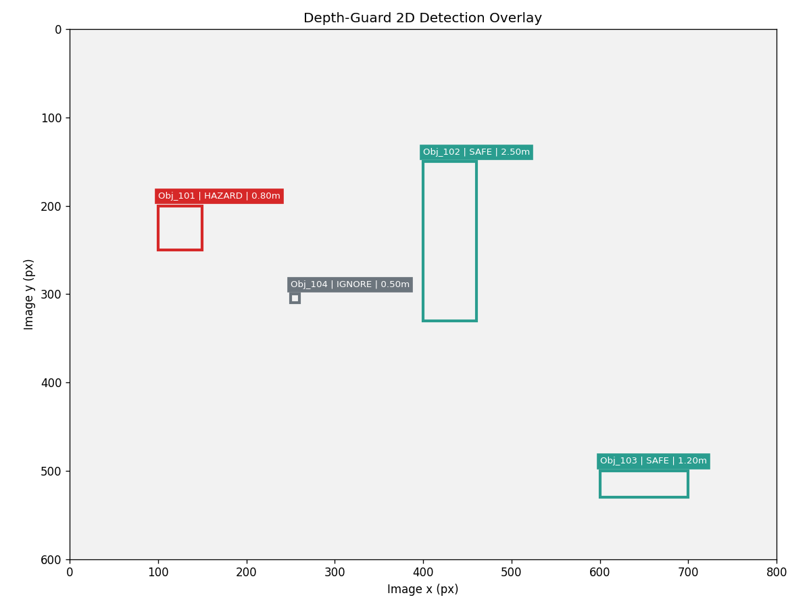
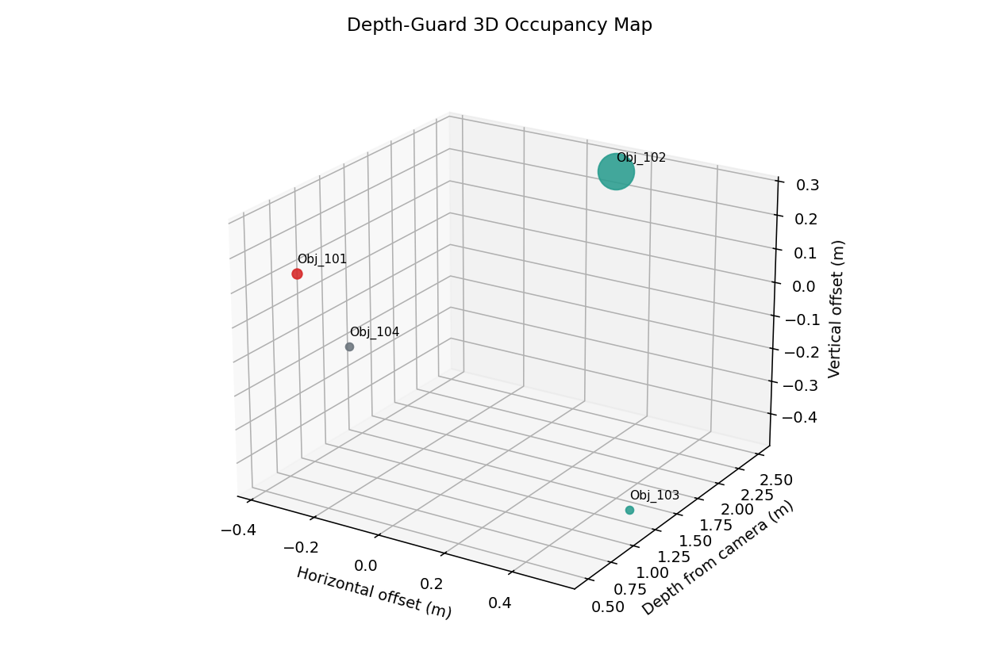
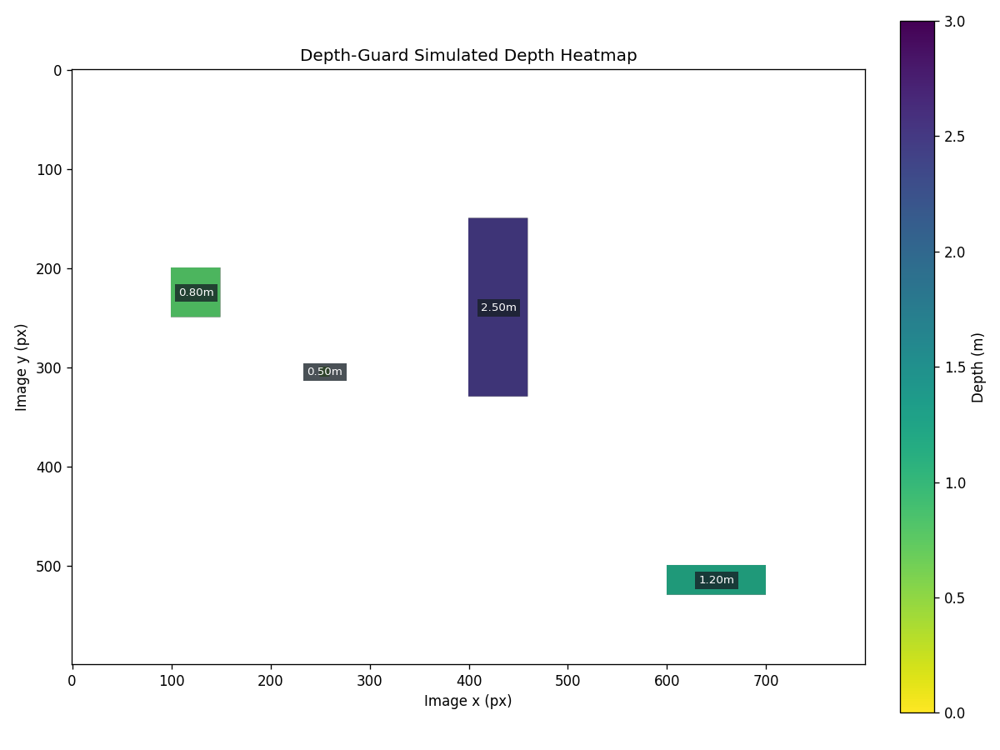
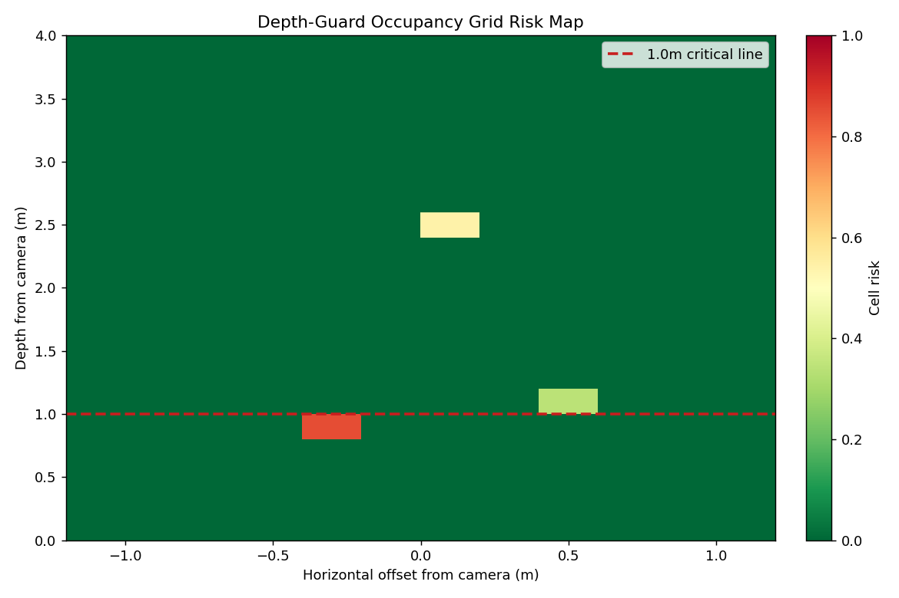
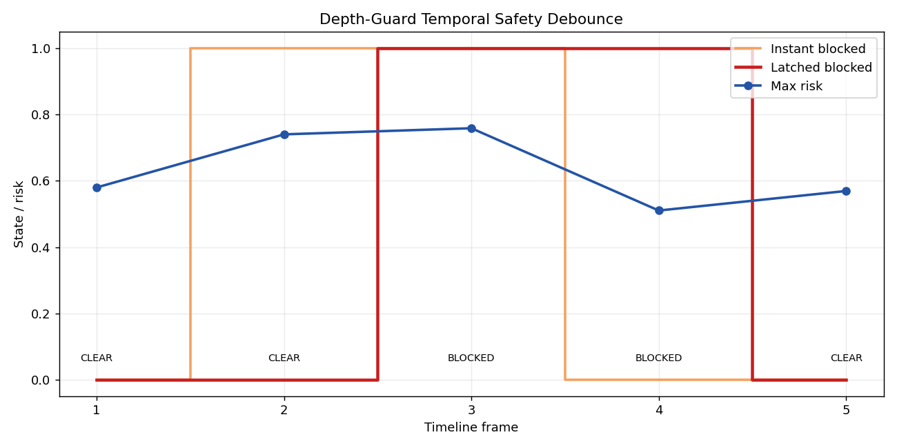

2D Detection Overlay

Operational Alerts
- Loading zone blocked by Obj_101 (Cardboard Box).
Zone Summary
Zone A
3 object(s)
1 hazard(s)
472.8 cm3
Zone B
1 object(s)
0 hazard(s)
18153.8 cm3
3D Spatial Map

Depth Heatmap

Occupancy Grid Risk Map

Temporal Safety Debounce

Object-Level Explainability
| Object | Label | Status | Depth | Clearance | Volume | Risk | Reason |
|---|---|---|---|---|---|---|---|
| Obj_101 | Cardboard Box | HAZARD | 0.80m | -0.20m | 327.9 cm3 | object is inside the 1.00m critical distance | |
| Obj_102 | Human | SAFE | 2.50m | +1.50m | 18153.8 cm3 | object is outside the critical distance | |
| Obj_103 | Pallet | SAFE | 1.20m | +0.20m | 144.8 cm3 | object is outside the critical distance | |
| Obj_104 | Small Tool | IGNORE | 0.50m | -0.50m | 0.1 cm3 | estimated volume is below the 20.0 cm3 minimum |
Rules Applied
- Ignore objects below the minimum physical volume threshold.
- Classify relevant objects inside the critical distance as hazards.
- Summarize occupied volume in Zone A for crowding awareness.
- Keep geometry assumptions configurable for camera calibration.
Structured JSON Output
{
"frame_id": "warehouse_frame_001",
"final_decision": "BLOCKED",
"is_blocked": true,
"hazard_count": 1,
"safe_count": 2,
"ignored_count": 1,
"max_risk_score": 0.747,
"occupied_volume_cm3": 472.68,
"crowded_volume_cm3": 5000.0,
"zone_summary": {
"Zone A": {
"objects": 3,
"hazards": 1,
"ignored": 1,
"volume_cm3": 472.78
},
"Zone B": {
"objects": 1,
"hazards": 0,
"ignored": 0,
"volume_cm3": 18153.78
}
},
"alerts": [
"Loading zone blocked by Obj_101 (Cardboard Box)."
],
"objects": [
{
"object_id": "Obj_101",
"label": "Cardboard Box",
"bbox_xywh": [
100.0,
200.0,
50.0,
50.0
],
"depth_m": 0.8,
"estimated_size_m": {
"width": 0.0687,
"height": 0.0694,
"thickness": 0.0687
},
"estimated_volume_cm3": 327.86,
"zone": "Zone A",
"status": "HAZARD",
"risk_score": 0.747,
"clearance_margin_m": -0.2,
"reason": "object is inside the 1.00m critical distance",
"position_m": {
"x": -0.378,
"y": 0.1041,
"z": 0.8
}
},
{
"object_id": "Obj_102",
"label": "Human",
"bbox_xywh": [
400.0,
150.0,
60.0,
180.0
],
"depth_m": 2.5,
"estimated_size_m": {
"width": 0.2577,
"height": 0.7809,
"thickness": 0.0902
},
"estimated_volume_cm3": 18153.78,
"zone": "Zone B",
"status": "SAFE",
"risk_score": 0.542,
"clearance_margin_m": 1.5,
"reason": "object is outside the critical distance",
"position_m": {
"x": 0.1289,
"y": 0.2603,
"z": 2.5
}
},
{
"object_id": "Obj_103",
"label": "Pallet",
"bbox_xywh": [
600.0,
500.0,
100.0,
30.0
],
"depth_m": 1.2,
"estimated_size_m": {
"width": 0.2062,
"height": 0.0625,
"thickness": 0.0112
},
"estimated_volume_cm3": 144.83,
"zone": "Zone A",
"status": "SAFE",
"risk_score": 0.343,
"clearance_margin_m": 0.2,
"reason": "object is outside the critical distance",
"position_m": {
"x": 0.5155,
"y": -0.4477,
"z": 1.2
}
},
{
"object_id": "Obj_104",
"label": "Small Tool",
"bbox_xywh": [
250.0,
300.0,
10.0,
10.0
],
"depth_m": 0.5,
"estimated_size_m": {
"width": 0.0086,
"height": 0.0087,
"thickness": 0.0013
},
"estimated_volume_cm3": 0.1,
"zone": "Zone A",
"status": "IGNORE",
"risk_score": 0.0,
"clearance_margin_m": -0.5,
"reason": "estimated volume is below the 20.0 cm3 minimum",
"position_m": {
"x": -0.1246,
"y": -0.0043,
"z": 0.5
}
}
]
}